Momento de Inércia
Prof. Nícolas Morazotti
nicolas.morazotti@gmail.com
Introdução
Hoje n√£o teremos v√≠deo do Universo Mecânico üò¢
Corpos rígidos
- Corresponde a um conceito limite ideal
- Corpo indeformável
- Distância entre duas partículas do corpo é constante ao longo do movimento
- Nenhum corpo é perfeitamente rígido
Corpos rígidos em Translação
- Diz-se que o movimento de um corpo rígido é de translação quando a direção de qualquer segmento que une dois pontos não se altera durante o movimento
Corpos rígidos em Translação
- Todos os pontos sofrem o mesmo deslocamento no mesmo intervalo de tempo
- Velocidade e aceleração de translação de um corpo rígido
- Movimento é equivalente ao de um ponto material
Corpos rígidos em Rotação

Corpos rígidos em Rotação

- Em contrapartida, podemos, em vez disso, fixarmos dois pontos \(A\) e \(B\) de um corpo rígido, bem como todos os pontos da reta que passa por ambos
- Pontos fora de reta têm de manter sua distância a tal eixo constante
- \(\overline{AB}\) é chamado eixo de rotação: todas as partículas descrevem círclos com centro em tal eixo
- Giram ângulos iguais em mesmo intervalo de tempo
Corpos rígidos em Rotação
- Rotação de um corpo rígido: ponto material se move circularmente ao redor do eixo de rotação
- Única coordenada: ângulo de rotação
Translação e Rotação de Corpos Rígidos
Translação de Corpos Rígidos
- Por terem a mesma velocidade \(v\) de translação, definimos o momentum \(p\) do sistema como \(p = Mv\)
- \(2^{\text{a}}\) lei de Newton:
- \(F = \frac{\mathrm{d}p}{\mathrm{d}t} = Ma\)
Translação de Corpos Rígidos
- \(F = \frac{\mathrm{d}p}{\mathrm{d}t} = Ma\)
- Massa \(M\): inércia \(\to\) dificuldade para alterar a quantidade de movimento do corpo
- Quanto maior a massa, maior a força necessária para acelerá-lo
Rotação de Corpos Rígidos
- Para descrever o movimento de rotação, descrevemos um raciocínio análogo
- Da mesma maneira que tínhamos uma dada velocidade \(v\) para a translação, teremos uma velocidade angular \(\omega\) para a rotação
- No caso de rotação, as velocidades \(v_i\) são distintas
Rotação de Corpos Rígidos
- Associa-se a um corpo em rotação uma "quantidade de movimento angular" - formalmente chamada de momentum angular \(L\)
- \(L = I\omega\)
- \(I\) é seu momento de inércia
Rotação de Corpos Rígidos
- Por analogia,
- \(\tau = \frac{\mathrm{d}L}{\mathrm{d}t}=I\alpha\)
- \(\tau\) é o torque, \(\alpha\) é a aceleração angular
Rotação de Corpos Rígidos
- As representações da \(2^{\text{a}}\) lei de Newton para um corpo rígido em translação e rotação são matematicamente equivalentes
- Assim como \(M \leftrightarrow\) dificuldade de alterar \(p\), \(I \leftrightarrow\) dificuldade de alterar \(L\)
Relações de grandezas
| Grandeza | Translação | Rotação |
|---|---|---|
| Inércia | \(M\) | \(I\) |
| Deslocamento | \(s=r\theta\) | \(\theta\) |
| Velocidade | \(v=r\omega\) | \(\omega\) |
| Aceleração | \(a=r\alpha\) | \(\alpha\) |
| Momentum | \(p=mv\) | \(L=I\omega\) |
| \(2^{\text{a}}\) lei de Newton | \(F = \dot{p}\) | \(\tau = \dot{L}\) |